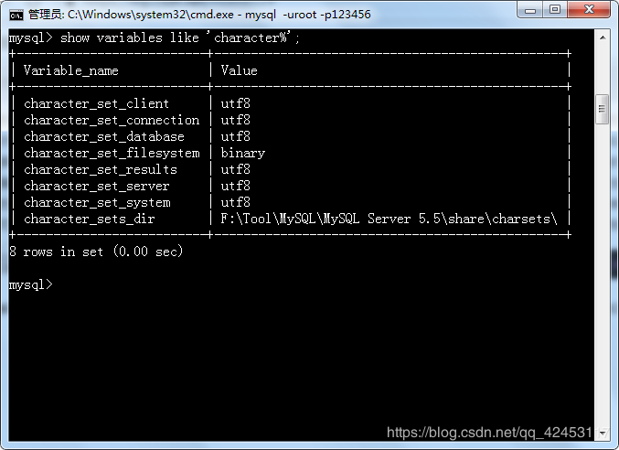
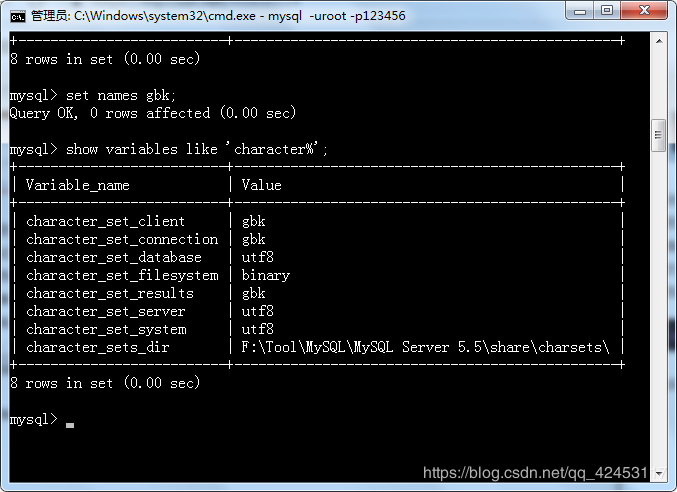
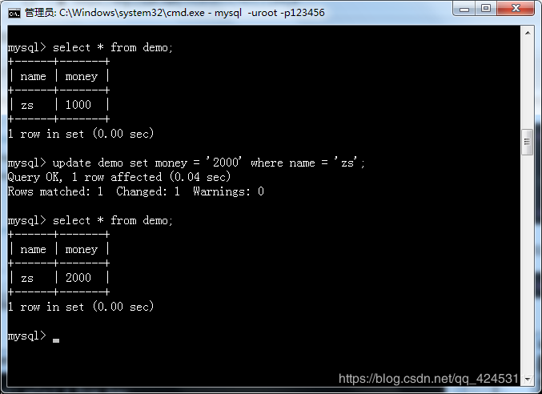
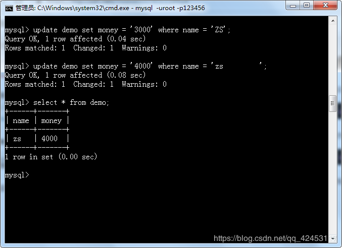
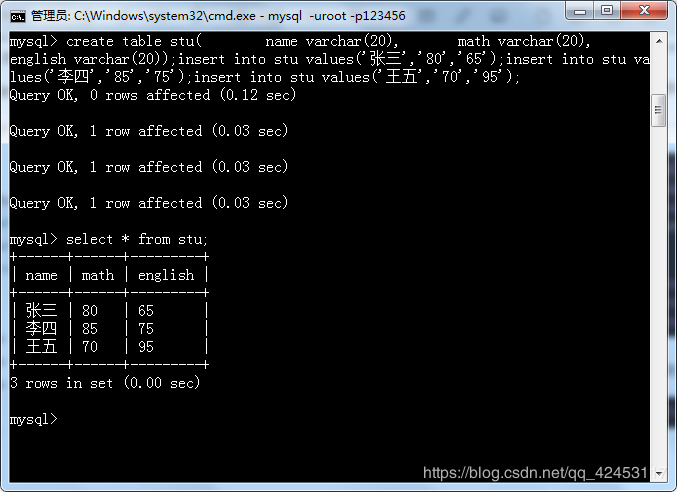
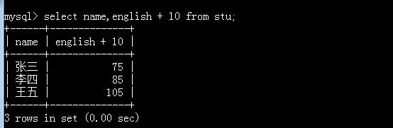
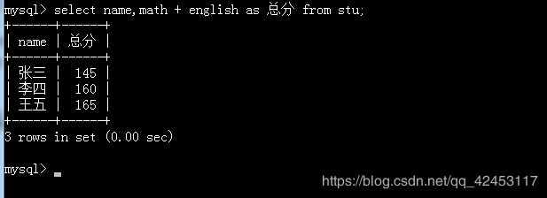

在此记录数据库操作中会出现的一些问题。
如果你用cmd窗口向一张表插入数据的时候，插入的数据是中文，会出现错误提示，用软件操作的请忽略。。。
出现错误的原因是cmd窗口采用的是gbk编码，所以你在cmd窗口输入的数据都是gbk编码的，而数据库中的编码默认都为utf8，所以出现的是编码问题。
我们可以输入该条指令查看数据库相关编码集。
show variables like 'character%';
会看到，数据库的所有相关编码集均为utf8。
那么如何解决插入乱码问题呢？
首先我们想到的就是修改插入数据的编码，但是cmd窗口是无法修改编码的，所以，我们应该修改的是客户端编码，也就是connection、client、results这三个的编码。
我们输入该条指令修改客户端编码集。
set names gbk;该条指令会同时修改上述的三个编码。
修改完成后，我们重新查看一下编码集。

成功修改。修改后我们再次进行中文数据的插入就不会出现问题了。但是，当我们重新开启一个cmd窗口时，插入中文的问题又出现了。因为刚才介绍的方法只是改变了当前cmd窗口的编码，只是临时设置了当前窗口的编码集。
下面我介绍一个一劳永逸的方法。
在mysql的安装目录下找到my.ini文件，这是数据库的配置文件，我们打开它。
在第55行存在这么一个标志，[mysql]
它下面进行的是客户端的配置，
而第67行的[mysqld]
进行的就是服务端的配置了。
我们只需要把[mysql]下的default-character-set=utf8改为default-character-set=gbk即可。
然后我们重启一下mysql服务。
先输入
net stop mysql;然后输入
net start mysql接下来，我们再登录到mysql，查看编码集，就会发现编码集成功被修改了，这样插入乱码的问题就解决了。
我们先创建一张表并初始化数据。
create table demo(
name varchar(20),
money varchar(20)
);
insert into demo values('zs','1000');现在，我们对该数据进行修改。
update demo set money = '2000' where name = 'zs';
这个操作相信大家都没有问题，但是我如果将更新语句这样写呢?
update demo set money = '3000' where name = 'ZS';亦或者是这样写呢？
update demo set money = '4000' where name = 'zs ';我们运行一下这两条sql语句。

会发现这两条sql语句都生效了，但是很多人认为这两条sql语句是有问题的，却能够运行成功。
其实，这是mysql的一个bug，那么，既然这种sql语句有问题，我们怎样才能够让mysql检测出来呢？
我们可以将sql语句这样写。
update demo set money = '2000' where binary name = 'zs';只需要在比较之前加上binary即可，我们测试一下。
这样大写的名字就修改不成功了。
在对表数据进行删除的时候，我们有两种方式实现。
第一种，
delete from 表名第二种，
truncate 表名这两条语句的效果相同，但是它们是有区别的，区别在哪呢？
使用truncate语句删除表数据的时候，删除记录是不可恢复的，不受事务管理。原理：先删除整个表，然后重新创建。
使用delete语句删除表数据的时候，可以被事务管理，而在事务中删除数据是可以回滚的。原理：一行一行地删除数据记录。
所以，truncate在删除所有记录的性能上，是优于delete的。
我们先创建一张表，然后初始化数据。
create table stu(
name varchar(20),
math varchar(20),
english varchar(20)
);
insert into stu values('张三','80','65');
insert into stu values('李四','85','75');
insert into stu values('王五','70','95');然后查询表数据。
select * from stu;
这条语句再熟悉不过了吧。
那么接下来就有几个需求了。
1、在所有学生英语分数上加10分特长分并查询
我们可以这样做。
select name,english + 10 from stu;
2、统计每个学生总分
select name,math + english from stu;
3、使用别名表示学生分数
在刚才查询学生总分的时候，列名总给人一种很不好的感觉，所以，我们可以给列名起一个别称。
select name,math + english as 总分 from stu;
在给列名起别称时，这个as是可以省略的，如：
select name 姓名 from stu;
所以这里就需要注意了：
select name math from stu;select name,math from stu;观察上面两个sql语句，你会发现只有一个逗号的差别，但两条语句的效果是完全不一样的。
第一条语句其实是省略了as，它的作用：查询学生姓名并给姓名列取名为math。
而第二条语句的作用：查询姓名和数学成绩列。
提醒：因为是查询操作，所以上述的所有语句不会对原数据产生任何影响。
还有几点要提及的地方：
在数据库中，null代表1/2，所以，任何表达式和null进行逻辑运算结果都是false；
逻辑运算中，and、or ------ 谁的优先级高？
select * from stu where 2 >1 or 2 >3 and 3 > 4;执行该条sql语句发现数据能够被查询到，说明and先执行，and优先级高于or。
select分组查询中分组函数的介绍：
count 返回查询结果记录条数
语法：select count(*) from 表名;
sum 对一列的数据求和
语法：select sun(字段名) from 表名;
sum求和时，null不参与运算
avg 对一列数据求平均值
语法：select avg(字段名) from 表名;
max/min 对一列数据求最大值和最小值
语法：select max(字段名),mini(字段名) from 表名;
最后一个注意事项：where不能使用分组函数，所以要想在分组查询的过程中添加限制条件，我们应该使用having，语法和where相同。